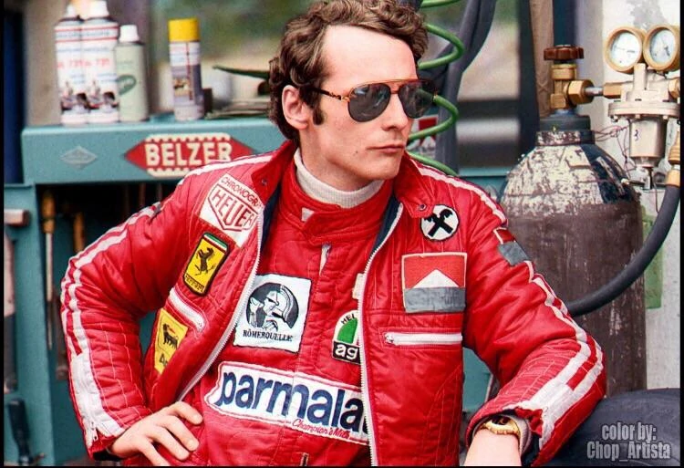
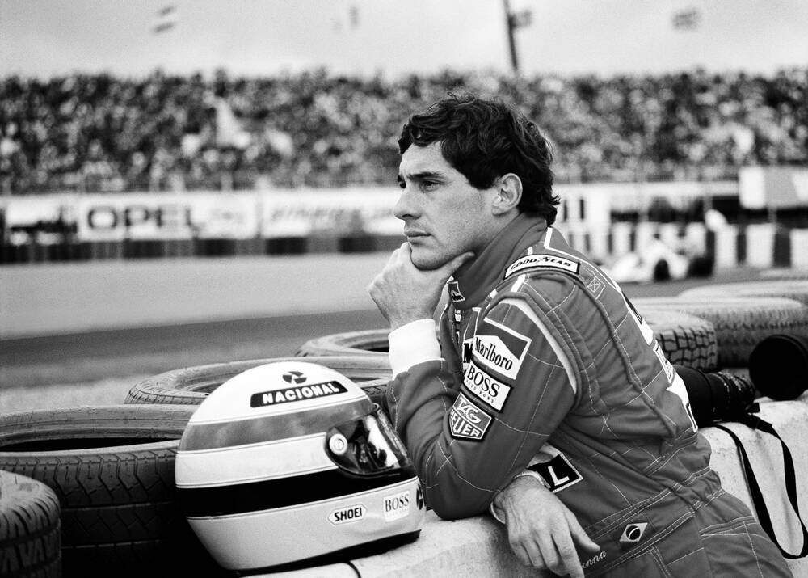

Frases de la Formula 1
"To finish first, first you have to finish"
Michael Schumacher
"Aprendes del exito, pero aprendía mas de las derrotas que de las victorias"
Niki Lauda

"El segundo es el primero de los perdedores"
Ayrton Senna
